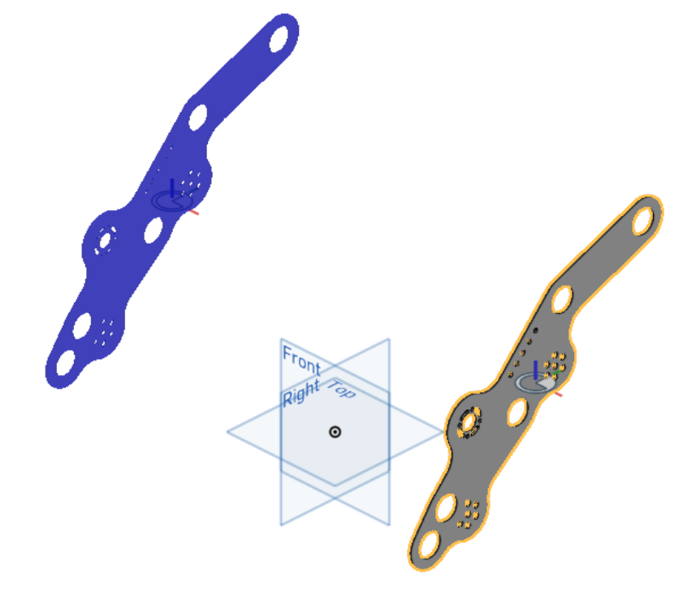

Assembly mirror¶
{kind=link}
{kind=link}
Assembly mirror facilitates assembly behavior by adding mate connectors to parts which allow instances of those parts to be quickly placed in mirrored positions in assemblies.
Important
Since FeatureScripts cannot be used directly in assemblies, the Assembly mirror feature cannot create transformed copies of parts directly inside assemblies. Instead, the Assembly mirror feature works by adding mate connectors to parts inside part studios which allow copies of those parts to be assembeled into mirrored positions later on.
{kind=link}
{kind=link}
Steps for creating mirrored parts¶
Create an Assembly mirror feature by selecting it from your FeatureScript dropdown.
Specify your desired result behavior (Part center or Origin).
See also
Result behavior for more information.
Specify one or more Entities (parts or surfaces) to find transforms for.
Select a Mirror plane to mirror about.
The Assembly mirror feature will automatically try each possible transform type (Linear, Z axis, Y axis, X axis, and Mirror) for each part and select the one that matches a part to its mirror image.
If a valid transform is found, the transform type of the part will be updated with the valid transform, a mirror image of the part will be shown in blue in the graphics window, and a mate connector which can be used to assemble the part in the location of its mirror image will be created.
Otherwise, the transform type of the part will be changed to Mirror, and a mirrored copy of the part will be created.
Warning
Since Assembly mirror cannot compute surface transform types automatically, the transform type of surfaces will always default to Mirror and will need to be changed manually.
Note
The transform type will only be computed automatically when a feature is first selected. If you make changes to the part later on, you may need to re-select the part or update the transform type manually.
{kind=link}
Choose whether to Copy part names to the mirrored versions of entities.
If you’ve chosen Copy part names, you may also specify:
A Prefix and Suffix to add to every mirrored part name
Update saved names, to update the internally saved names of every part
Note
Unlike a normal boolean, choosing Update saved names should result in Update saved names immediately becoming unchecked again. This is expected, and indicates that the update operation has succeeded.
See also
Copy part names for more information.
Click
 .
.
{kind=link}
Steps for creating mirrored parts using preselections¶
Before creating an Assembly mirror feature:
Pre-select a Mirror plane and one or more Entities to mirror by either:
Selecting parts and planes directly from the feature tree or parts list
Selecting geometry (edges, faces, or vertices) in the graphics window which touch the entities you’d like to use
Create an Assembly mirror feature by selecting it from your FeatureScript dropdown.
The Entities and Mirror plane parameters are filled in automatically according to your preselections.
Specify additional parameters as needed.
Click
.
{kind=link}
{kind=link}
Tip
Several native Onshape features also support preselections. For example, the Onshape Plane feature will automatically switch to Line angle mode if you select a plane and a line prior to creating the feature.
Result behavior¶
Assembly mirror offers two options for locating mirrored parts; Part center and Origin.
Part center: Mate connectors are created such that entity mirrors are aligned when their center mate connectors are fastened together.
Origin: Mate connectors are located relative to the world origin, so mirrors are aligned when their mate connectors are fastened to the part studio origin. To assist with this, care should be taken that the assembly origin matches the part studio origin.
Tip
When using Origin, make assembling faster and more robust by createing a mate connector at the assembly origin and selecting it via the Mate Features list.
Copy part names¶
The copy part name behavior is as follows:
When parts are first selected, their names at the time of selection are also saved.
If an entity has its transform type set to Mirror, a mirror of that entity is created. If Copy part names is enabled, the saved entity name is applied (along with the Suffix and Prefix, if specified).
There are a few notable limitations to this functionality:
Editing the name of a entity which is being mirrored by Assembly mirror will not automatically update the name of the mirrored entity. To get the mirrored entity names to update, click Update saved names.
Note
Unlike a normal boolean, choosing Update saved names should result in Update saved names immediately becoming unchecked again. This is expected, and indicates that the update operation has succeeded.
Manually changing the name applied to a entity mirrored by the Assembly mirror FeatureScript will result in the FeatureScript applied value becoming shadowed until all properties of the entity are reset.
Tip
Manually changing any property on a part which has been set by a FeatureScript, like color, material, or name, will shadow the FeatureScript applied property until all properties on the part are reset.
To reset the properties of a part:
Right click on the part in the parts list.
Click Properties….
Click Reset all.
Click Save.